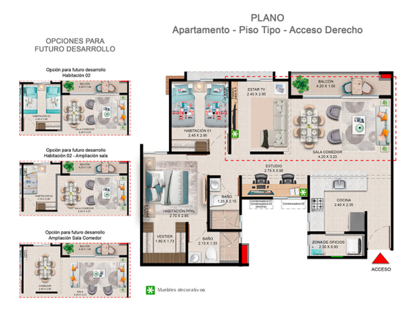

<mat-dialog-content class="row align-items-center justify-content-center py-2 px-6">
  <button mat-icon-button >
    <mat-icon color="primary">chevron_left_filled</mat-icon>
  </button>
  
    <button mat-icon-button class="column justify-content-center align-items-center">
      <mat-icon color="primary">chevron_right_filled</mat-icon>
  </button>
</mat-dialog-content>
  <div mat-dialog-actions class="row pt-9 gap-2 action-dialog  ">
    <button mat-raised-button color="primary" mat-dialog-close>Cerrar</button>
  </div>